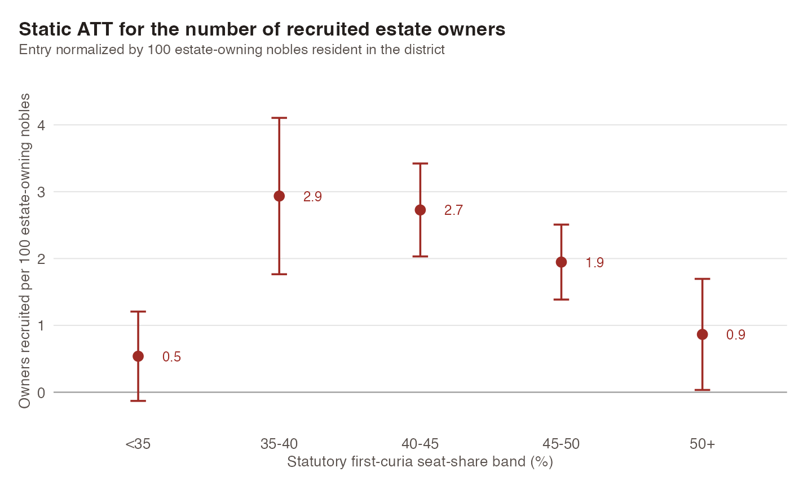

{kind=link}
Landowners into Bureaucrats: Decentralization and Local Administration in the Russian Empire
Working paper2026
Abstract
How do weak states build local capacity when they lack the money, the personnel, and the information to govern their own territory? We argue they can do it by deliberately empowering the majority against the very elites on whom their rule depends. A weak state needs local elites to staff the offices that implement policy, but it also needs more revenue and public goods than those elites, left in control of policy, will ever supply. Enfranchising a non-elite majority closes the gap twice over: it raises revenue by taxing the elite, and it draws elite members into the bureaucracy, because their marginal contribution to public goods provision rises with the revenue raised. The state then tunes the level of enfranchisement to keep elites from retaking power and extracting rents from the majority. We test the theory on the 1864 zemstvo reform in the Russian Empire, which produced an explosion of elite participation in local administration even as elite political power fell. We reconstruct the archival formula that allocated assembly seats and trace local political power through the taxation of noble estates, the assemblies’ budgets, and their policy record. Where the majority held power, the elite paid more, and more of the peasant-facing agenda was implemented. Participatory local government in the Russian Empire emerged not from democratic pressure below, but from an autocracy building state capacity from a position of severe weakness.
{kind=link}

Draft available upon request.
Presented at the Stanford Historical Social Science Workshop, the Berkeley–Stanford Bay Area Economic History Workshop, the Andrea Mitchell Center Graduate Workshop, and the Summer Workshop in the Economic History and Historical Political Economy of Eurasia.
{kind=link}
{kind=link}